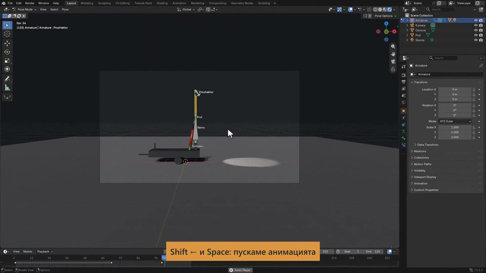

Ригът е набор от кости, който движи частите на модела, затова анимираме костите, а не самите части. Всяка кост се върти около главата си (Head), затова за механизъм главата трябва да е точно в болта, около който се върти частта. Ако главата е встрани от болта, частта се завърта около грешна точка и се разминава с останалите.
Искаме главата на първата кост да е в шарнира на рамото. В Object Mode избираме Ramo и натискаме Shift S → Cursor to Selected; 3D курсорът отива в началото на рамото, т.е. в шарнира. После натискаме Shift A → Armature. Появява се обект Armature с една кост, чиято глава е в курсора и която сочи нагоре по Z. За да виждаме костта през рамото, в Object Data Properties (зелената фигурка) → Viewport Display включваме Names, за да се виждат имената на костите, и In Front. Влизаме в Edit Mode с Tab: тук определяме къде стоят костите. Кликваме върху малкия кръг на върха (Tail) и го местим с G по рамото. Наименуваме костта Ramo с F2.
Дължината на костта не влияе на въртенето, защото то е около главата. Затова върхът се поставя там, където ще ни трябва: на болта на пръта. Засега го слагаме приблизително по рамото.
Ако преди Shift A курсорът не е в шарнира, арматурата се появява на друго място. Тогава трием арматурата и повтаряме Shift S → Cursor to Selected с избрано рамо.
Ctrl Tab в Edit Mode не влиза в Pose Mode, а отваря менюто с режимите, затова първо излизаме с Tab. Ако в Pose Mode R не прави нищо, костта не е избрана: в Edit Mode беше избран само върхът ѝ.
Всяка подвижна част получава своя кост с глава в своя болт. Прътът и прожекторът са закачени за рамото, затова техните кости стават деца на костта Ramo: когато рамото се завърти, те се движат с него. Цилиндърът е закачен за ремаркето, което не мърда, затова неговата кост няма родител.
Нова кост в Edit Mode се добавя с Shift A и главата ѝ е там, където е курсорът. Затова за всяка кост първо слагаме курсора в болта.
Главите трябва да са точни, защото около тях става въртенето. Посоката на Prut и Tsilindur може да е приблизителна, защото Damped Track ще ги насочи сам.
При Ctrl P последната избрана кост става родител. Ако изберем костите наобратно, Ramo става дете на Prut. Проверяваме в Bone Properties → Relations → Parent.
Прътът е скрит в цилиндъра, затова го избираме в Outliner. След Shift A в Edit Mode новата кост е избрана, но не е активна: преди F2 я избираме с клик.
Досега костите се движат, но частите не. Всяка твърда част трябва да следва изцяло една кост, без да се огъва. Това прави Ctrl P → Bone: обектът се закача за избраната кост така, както в урок 04 частите се закачаха за друг обект.
В Object Mode избираме Ramo, после с Shift арматурата, и влизаме в Pose Mode с Ctrl Tab. Кликваме костта Ramo, за да е активна, и натискаме Ctrl P → Bone. Връщаме се в Object Mode с Ctrl Tab и повтаряме за Tsilindur → кост Tsilindur и Prut → кост Prut. Prozhektor се закача по същия начин за костта Prozhektor; светлината Svetlina вече е негово дете от стартовия файл, затова се движи с него.
Коя кост за коя част се вижда от болта: частта следва костта, чиято глава е в нейния болт.
Ако след Ctrl P частта скочи на друго място, при закачането не е била избрана Bone, а друга опция (например With Automatic Weights). Отменяме с Ctrl Z и повтаряме.
Цилиндърът и прътът трябва да са на една линия при всяко положение на рамото. Вместо да ги въртим на ръка във всеки кадър, даваме на всяка от двете кости ограничение (Bone Constraint) Damped Track: то завърта костта така, че нейната ос Y (от главата към върха) да сочи към цел.
Цилиндърът трябва да сочи към болта на пръта, а прътът към болта на цилиндъра. Болтът на пръта е върхът на костта Ramo, затова целта на Tsilindur е Ramo с Head/Tail 1, тоест върхът ѝ. Целта на Prut е Tsilindur с Head/Tail 0, тоест главата му.
Head/Tail казва къде по дължината на целевата кост е точката: 0 е главата, 1 е върхът. Избираме я по това къде е болтът, към който трябва да сочи частта.
Ако двете кости гледат една към друга, Blender приема това, но го отбелязва като кръгова зависимост (dependency cycle): за да насочи цилиндъра, трябва първо да знае къде е прътът, а за пръта трябва да знае къде е цилиндърът. Затова тук целта на цилиндъра е върхът на рамото, който не зависи от буталото.
След рига анимираме само две кости: Ramo и Prozhektor. Буталото и светлината следват сами. Рамото тръгва от положението за превоз (хоризонтално, кадър 1) и стига работното положение (вертикално), след което прожекторът се накланя към сцената.
90° идва от двете положения на рамото: от хоризонтално до вертикално. Ако при R 90 рамото се завърти надолу към ремаркето, посоката е обратна и пишем −90. Наклонът на прожектора се избира по това къде на пода трябва да падне светлината.
Damped Track върти костите, но не променя дължините им. Ако рамото отиде под хоризонталата, прътът минава през дъното на цилиндъра, а ако отиде много след вертикалата, прътът излиза от него. Затова рамото се анимира между 0° и 90°.
Клавишите отиват към областта под мишката: след като напишем кадъра в Timeline, връщаме мишката над 3D изгледа, преди да натиснем R или I.
Ригваме мобилна осветителна кула и я анимираме: рамото се вдига от положението за превоз, а прожекторът се насочва към точка на сцената.
| # | Елемент | Техника | Какво трябва да се случи |
|---|---|---|---|
| 1 | Кост Ramo | Shift A → Armature, Shift S | главата е в шарнира; рамото се върти около него |
| 2 | Кости Prut, Tsilindur, Prozhektor | Shift A в Edit Mode, Ctrl P → Keep Offset | главите са в болтовете; Prut и Prozhektor следват Ramo |
| 3 | Частите | Ctrl P → Bone | всяка част следва своята кост; светлината следва прожектора |
| 4 | Буталото | Damped Track | цилиндърът и прътът са на една линия при всеки ъгъл |
| 5 | Анимацията | I, R | рамото се вдига от 0° до 90°, после прожекторът се накланя |
László Moholy-Nagy, „Light Prop for an Electric Stage“ (1930): механична скулптура с мотор, движещи се метални части и светлина, замислена като апарат за сцена. harvardartmuseums.org
Телескопично рамо. Добавяме втора част, която излиза от горния край на рамото: кост, дете на Ramo, която се анимира с G по оста на рамото, а прожекторът се закача за нея.
Анимацията продължава до кадър 240: прожекторът осветява една след друга три точки на пода, като спира на всяка, а рамото накрая се връща в положението за превоз.
Анимацията на живо, а в Pose Mode проверяваме, че ключовете са само на Ramo и Prozhektor.